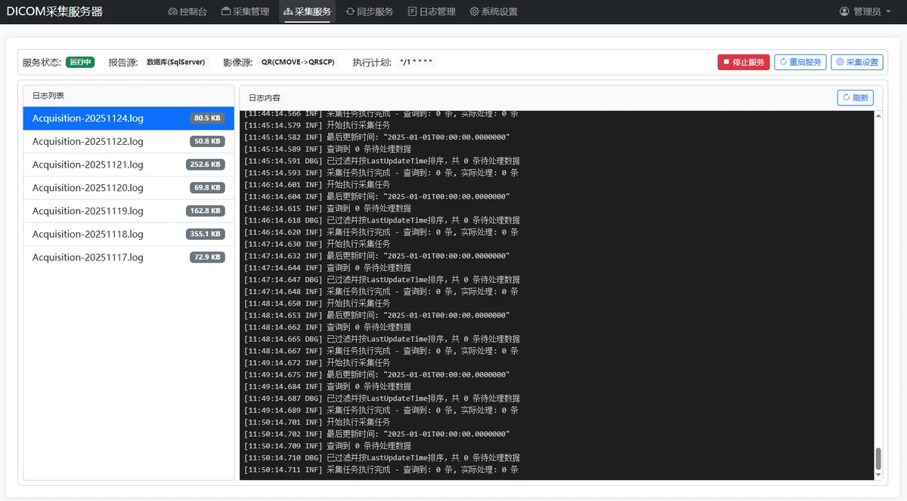
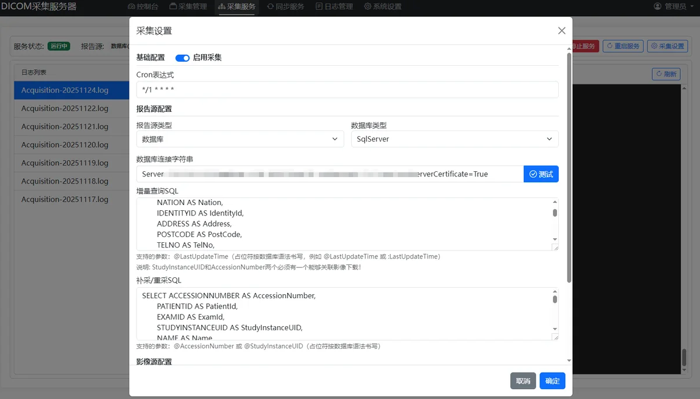
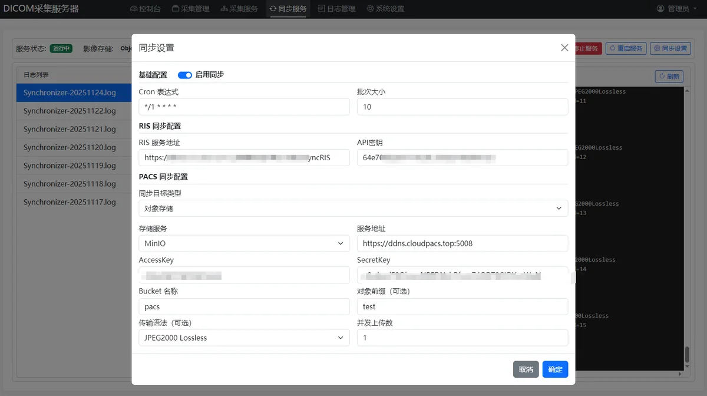

产品概览
DicomAcquisition 是一套部署在本地数据中心的医学影像采集、同步与管理平台。适用于需要从院内 PACS 接口中采集报告与影像数据，并上传到其他数据中心进行存储归档的场景。
可用于院内影像中心数据采集汇聚、医保影像云采集上传、区域影像平台采集上传、影像会诊应用采集上传等。
主要功能
- 支持通过多种数据库与 API 接口方式增量采集报告数据
- 支持通过 QR（C-MOVE/C-GET）或共享文件服务方式采集 DICOM 影像数据
- 支持将采集的报告同步上传到中心 API 服务
- 支持将采集的影像同步上传到 STOW-RS 或各种对象存储
- 支持 HTML / PDF 报告采集
- 支持采集影像 DicomTag 生成 JSON
- 支持上传影像进行压缩处理
- 支持采集普通图片格式并转换成 DCM 格式存储
- 支持本地采集数据管理
部署示意



| 适用对象 | 区域平台、医保影像云、医联体影像中心 |
|---|
| 部署方式 | 本地数据中心部署 |
|---|